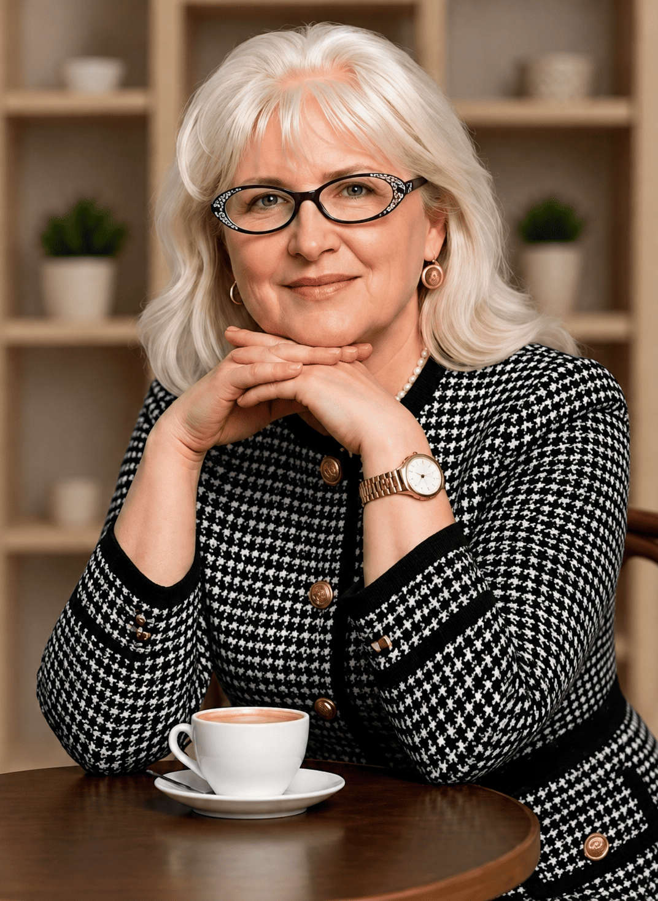
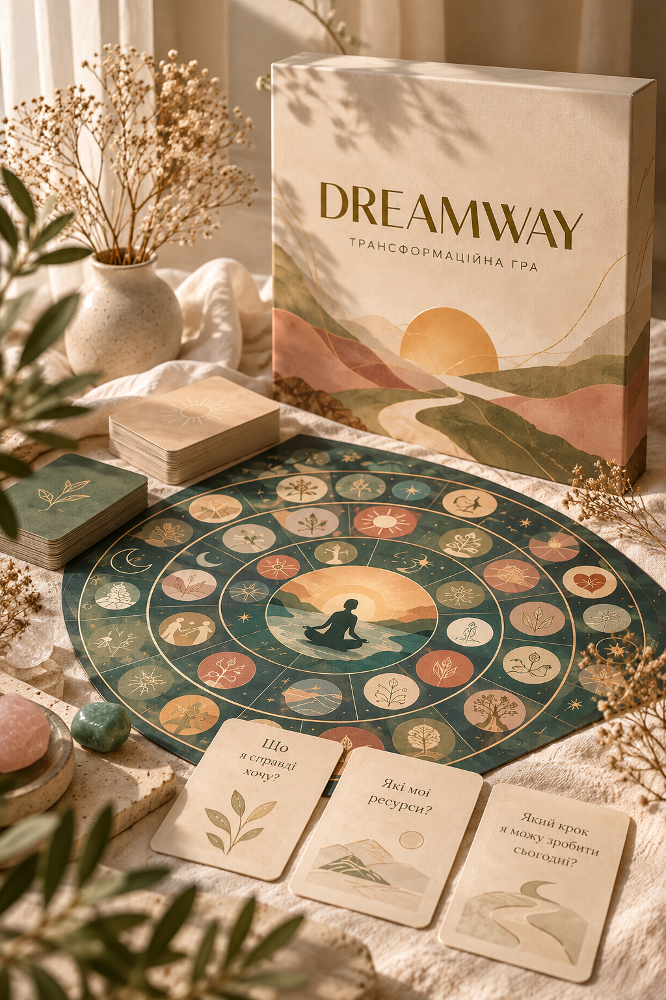

Із собою
Стосунки із собою
Це про здатність чути себе: свої почуття, потреби, бажання та межі.
30+ років досвіду
Допомагаю краще зрозуміти себе, свої почуття, потреби та стосунки
з важливими людьми.
Разом ми досліджуємо життєві ситуації, внутрішні переживання та
шукаємо власні шляхи до змін.
Мій підхід
Для мене психологічна робота — це простір довіри, прийняття та спільного дослідження.
Я не даю готових рецептів, а допомагаю вам почути себе, краще зрозуміти власну історію та знайти рішення, які відповідають саме вам.

Про мене
Я — Анна Настич, сімейний психолог. Допомагаю краще зрозуміти себе, свої почуття, потреби та стосунки з важливими людьми.
Мені 70 років. Понад 40 років практики. Пенсіонерка, яка продовжує консультувати, бо люблю людей, їхній розвиток і досягнення. Кожен клієнт для мене — окремий Всесвіт, а їхні щасливі життя мене надихають.
У шлюбі 45 років, маємо дорослих дітей і троє онуків. У вільний час малюю, танцюю, співаю, вирощую рослини та плекаю свій сад і город.
Окрім двох дипломів, пройшла тренінги з психодрами, символдрами, транзактного аналізу, арт-терапії, системних розстановок, роботи з родовими сценаріями та КПТ.
Продовжую професійний розвиток: курси, тренінги, особиста психотерапія й супервізія.
Знайти мене
З чим я працюю
Із собою, партнером, батьками, дітьми та світом.
Адже труднощі в одній сфері часто впливають на інші. Конфлікти з партнером можуть бути пов’язані з досвідом родини, складні стосунки з батьками — із труднощами у побудові власних меж, а втрата контакту із собою — позначатися на всьому житті.
Із собою
Це про здатність чути себе: свої почуття, потреби, бажання та межі.
З партнером
Конфлікти, образи, непорозуміння, віддалення, ревнощі, труднощі з довірою та близькістю.
З батьками
Дослідження сімейного досвіду, сценаріїв та власних меж без втрати можливості для близькості.
З дітьми
Контроль, межі, самостійність, довіра, конфлікти та взаєморозуміння у різні періоди батьківства.
Зі світом
Проявляти себе, приймати зміни, витримувати оцінку, просити про допомогу та відчувати зв’язок із життям.
Сімейна психологія
До сімейного психолога приходять не лише тоді, коли в родині серйозний конфлікт. Часто людина просто відчуває, що щось у стосунках перестало працювати так, як раніше, але не розуміє, що саме відбувається.
Пара може мати почуття, спільне життя, дітей і багато років разом — і водночас знову й знову повертатися до одних і тих самих конфліктів.
Здавалося б, доросле життя вже давно почалося, але рішення продовжують залежати від думки мами чи тата.
Турбота про інших може стати настільки звичною, що власні потреби поступово зникають із поля уваги.
Коли дитина виростає, батькам доводиться змінювати свою роль. Те, що раніше було турботою, доросла дитина може сприймати як контроль.
Іноді немає одного великого конфлікту. Є відчуття внутрішньої порожнечі, втоми, розгубленості або життя «на автоматі».
Тоді психологічна консультація може стати простором для зупинки й уважного дослідження себе.
Ми можемо подивитися на ваші стосунки, почуття, потреби, життєві ролі та те, що заважає рухатися далі.
Ми разом досліджуємо конкретну ситуацію, ваш досвід, почуття, потреби та можливості. Іноді вже сама можливість подивитися на знайому історію з іншого боку відкриває нові рішення.
Групова програма
У кожної людини є своє Джерело Сили.
Іноді воно б'є повним потоком, а іноді здається, що вода майже зникла.
Її може перекривати крига перепон, русло може бути замулене старими образами, страхами, чужими сценаріями та невисловленими почуттями.
Але джерело не зникає. Сила вже є всередині тебе.
Трансформаційна гра Dream Way
Якщо ви знаєте, чого хочете, але страхи, сумніви чи внутрішні обмеження знову зупиняють — Dream Way допомагає подивитися на ситуацію інакше, побачити свої ресурси та наступний крок.
Що це за гра? Психологічна трансформаційна гра для дослідження особистого запиту, мрії, перешкод та власних ресурсів.
Як проходить? У процесі гри ви досліджуєте свої переконання, помічаєте нові можливості й визначаєте наступні кроки.
Авторка гри: Ірина Красуля.
Тривалість і вартість: уточнюються під час запису.

Група підтримки
Онлайн-група підтримки
для тих, хто проживає втрату.
Без поспіху, без вимоги «відпустити» чи забути.
У безпечному й бережному просторі можна бути зі своїми почуттями, говорити або просто слухати.
Разом поступово шукатимемо опору та сили жити далі — з тим, що сталося.
Побачити приховане. Повернутися до свого життя.
Системні розстановки за Бертом Геллінгером онлайн — метод роботи, який допомагає побачити приховані динаміки родинної системи.
Це можливість дослідити повторювані сценарії, складні життєві вузли та те, що може роками залишатися непоміченим.
Щоб відпустити тягар минулого і знайти власну внутрішню опору.
Відгуки
Живі враження, усвідомлення та зміни після консультацій, групових зустрічей і практик.
Більше відгуків та історій — в Instagram
Більше відгуківКонтакти
Якщо ви відчуваєте, що хочете краще зрозуміти себе, свої почуття чи стосунки — напишіть мені. Ми домовимося про зручний формат та час консультації.
Безкоштовний Telegram-канал
Запрошую у простір підтримки та самопізнання: психологічні замітки, практики, медитації, підкасти, МАК-карти й живе спілкування. Тут можна зупинитися, прислухатися до себе й віднайти власну опору.
Приєднатися безкоштовно